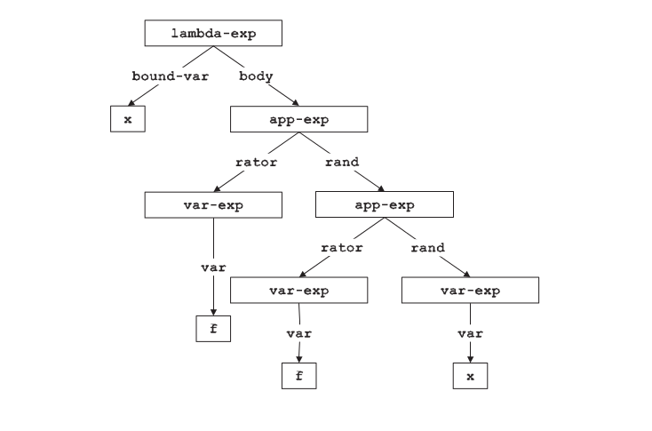

读EOPL3第二章(Data Abstraction)
Table of Contents
1 概述
第二章讲述了数据抽象（data abstrction）的概念，通过将数据集分成interface（交互接口）和implementation（具体实现）来对数据进行抽象，这样的好处是可以是写的代码不依赖于数据集具体的实现。
2 通过交互接口(Interface)来表述数据
通过Data Abstraction的方式，将数据的表示分成Interface和Implementation，这样的好处是当需要更换数据的实现方式时，只要改写对应interface的实现方式，而不需要改写采用这些Interface的代码（client code），使得具体的client code不依赖于数据的表现形式 (representation-independent)。比如，当我们写程序来操作文件时采用的open,read,write,close等方法，这些方法可以看成是interface，我们具体写的代码通过操作这些interface来完成相应的操作，如果文件的实现形式更改了，我们只需改写这些相应的open,read,write,close而不用改写具体的client code
2.1 举个具体的例子，我们想要描述“自然数”这个数据集，interface可以是：=zero=,=is-zero?=,=successor=,=predecessor=，如果用$⌈ v ⌉$来指代数据v的表现形式的话，interface的实现需要满足下面条件：
这样当我们写程序的时候就可以使用这些interface来操作自然数集，比如定义加法：
(define plus
(lambda (x y)
(if (is-zero? x)
y
(successor (plus (predecessor x) y)))))
不管interface的是怎么实现的，加法总是可以这样定义。其中用来构造数据类型的interface叫做constructors（上面例子中的｀zero｀，｀successor｀，｀predecessor｀），从数据值里提取信息的叫observers（上面例子中的｀is-zero?｀）。 而interface怎么实现取决于数据以怎样的方式表示：
一元表示的方法（Unary representation） 一元表示法可以这么定义：
⌈ 0 ⌉ = ()
⌈ n+1 ⌉ = (\#t \;.\; ⌈ n ⌉)在这种表示法下，上述自然数的interface可以这么定义：
(define zero (lambda () ’())) (define is-zero? (lambda (n) (null? n))) (define successor (lambda (n) (cons #t n))) (define predecessor (lambda (n) (cdr n)))
scheme 数字表示的方法（Scheme number representation） scheme 数字表示的方法 是用shceme中的整数n代表\(\lceil n \rceil\) 在这种表示法下，上述自然数的interface可以这么定义：
(define zero (lambda () 0)) (define is-zero? (lambda (n) (zero? n))) (define successor (lambda (n) (+ n 1))) (define predecessor (lambda (n) (- n 1)))
大数字表示法（Bignum representation） 大数字表示法可以这么定义：
⌈ n ⌉ =
\begin{cases} (), &\text{n = 0}\\ (r \;.\; \lceil q \rceil), &\text{n = qN + r, 0 $\leq$ r $\leq$ N} \end{cases}按照这个定义，取N = 16， $⌈ 33 ⌉$ ＝ (1 2), ⌈ 258 ⌉ = （2 0 1）， 因为\(258 = 2 \times 16^0 + 0 \times 16^1 + 1 \times 16^2\) 在这种表示法下，上述自然数的interface可以这么定义：
(define N 10) (define zero (lambda () '())) (define is-zero? (lambda (n) (null? n))) (define successor (lambda (n) (cond ((null? n) '(1)) ((= (+ (car n) 1) N) (cons 0 (successor (cdr n)))) (else (cons (+ (car n) 1) (cdr n)))))) (define predecessor (lambda (n) (cond ((null? n) (eopl:error'predecessor "zero.~%")) ((zero? (car n)) (cons (- N 1) (predecessor(cdr n)))) ((and (= (car n) 1) (null? (cdr n))) '()) (else (cons (- (carn) 1) (cdr n))))))
3 两种表述数据类型的方法
通过数据类型：环境变量（environments）来说明，environments是是一个将变量和值绑定在一起的有限的数据集。环境变量可以以这样的形式表示\({(var_1,val_1),...,(var_n,val_n)}\).对应的interface需要满足以下条件：
\begin{align*} (empty-env) &= \lceil \theta \rceil \\ (apply-env \lceil f \rceil var) &= f(var) \\ (entend-env var v \lceil f \rceil) &= \lceil g \rceil ,\\ &where \; g(var1) = \begin{cases} v, & \text{if $\;var_1$ = var} \\ f(var_1), & \text{otherwise} \end{cases} \end{align*}其中`empty-env`用来构造一个空的环境变量,`apply-env`用来获取环境变量中的值，`entend-env`用来扩充环境变量。 根据以上interface，一个环境变量可以如下构造：
(define e (extend-env 'd 6 (extend-env 'y 8 (extend-env 'x 7 (extend-env 'y 14 (empty-env))))))
3.1 第一种表示：Data Structure Representation
根据environment的结构特征：每个environment可以从一个空的environment开始，用`extend-env`构造数次得到，所以每个环境变量可采用下面的语法表示：
#+ENDEXAMPLE lisp Env-exp :: = (empty-env) :: = (extend-env Identifier Scheme-value Env-exp)
#+ENDEXAMPLE
注意到这个表示和描述lists的语法是一样的，所以可以得到下面的实现（采用类似lists的实现）：
Env = (empty-env) | (extend-env Var SchemeVal Env) Var = Sym empty-env : () → Env (define empty-env (lambda () (list ’empty-env))) extend-env : Var × SchemeVal × Env → Env (define extend-env (lambda (var val env) (list ’extend-env var val env))) apply-env : Env × Var → SchemeVal (define apply-env (lambda (env search-var) (cond ((eqv? (car env) ’empty-env) (report-no-binding-found search-var)) ((eqv? (car env) ’extend-env) (let ((saved-var (cadr env)) (saved-val (caddr env)) (saved-env (cadddr env))) (if (eqv? search-var saved-var) saved-val (apply-env saved-env search-var)))) (else (report-invalid-env env))))) (define report-no-binding-found (lambda (search-var) (eopl:error ’apply-env "No binding for ~s" search-var))) (define report-invalid-env (lambda (env) (eopl:error ’apply-env "Bad environment: ~s" env)))
3.2 第二种表示：Procedural Representation
这种表示法将envrionment看成一个procedure, 给定一个var,得到一个val具体实现如下
Env = Var → SchemeVal empty-env : () → Env (define empty-env (lambda () (lambda (search-var) (report-no-binding-found search-var)))) extend-env : Var × SchemeVal × Env → Env (define extend-env (lambda (saved-var saved-val saved-env) (lambda (search-var) (if (eqv? search-var saved-var) saved-val (apply-env saved-env search-var)))))
4 递归数据的interfaces
接下来看看如何得到interfaces，以lambda-calculus数据类型为例。 lambda-calculus可以采用如下定义：
Lc-exp :: = Identifier :: = (lambda (Identifier) Lc-exp) :: = (Lc-exp Lc-exp)
Lc-exp :: = Identifier :: = (lambda (Identifier) Lc-exp) :: = (Lc-exp Lc-exp)
lambda-calculus的定义是采用递归的形式定义的，为了定义递归类型数据的interfaces，可以按照下面规则：
1.对每一个数据类型归纳一个constructor和predicate 2.对每一个传给constructor的参数归纳一个extractor
如此，可创建lambda-calculus的以下的interfaces:
;The constructors are: var-exp : Var → Lc-exp lambda-exp : Var × Lc-exp → Lc-exp app-exp : Lc-exp × Lc-exp → Lc-exp ;The predicates are: var-exp? : Lc-exp → Bool lambda-exp? : Lc-exp → Bool app-exp? : Lc-exp → Bool ;The extractors are: var-exp->var : Lc-exp → Var lambda-exp->bound-var : Lc-exp → Var lambda-exp->body : Lc-exp → Lc-exp app-exp->rator : Lc-exp → Lc-exp app-exp->rand : Lc-exp → Lc-exp
然而，每次都这样创建interfaces会很枯燥，scheme里提供了一个自动构造和实现interfaces的工具，对于刚刚的interfaces可以如下创建：
(define-datatype lc-exp lc-exp? (var-exp (var identifier?)) (lambda-exp (bound-var identifier?) (body lc-exp?)) (app-exp (rator lc-exp?) (rand lc-exp?)))
`define-datatype`依照如下格式：
(define-datatype type-name type-predicate-name
\;\;{ (variant-name { (field-name predicate) }*)}^+)
使用这个`define-datatype`定义的数据可以像下面这样使用：
``` ；判断lambda-calculus里是否存在某个symbol occurs-free? : Sym × LcExp → Bool (define occurs-free? (lambda (search-var exp) (cases lc-exp exp (var-exp (var) (eqv? var search-var)) (lambda-exp (bound-var body) (and (not (eqv? search-var bound-var)) (occurs-free? search-var body))) (app-exp (rator rand) (or (occurs-free? search-var rator) (occurs-free? search-var rand)))))) ```
这里采用了 cases 来判断采用那种形式， cases 语法如下：
(cases type-name expression { (variant-name ( { field-name }*) consequent) }* (else default))
define-datatype 提供了定义递归数据类型的一种选择，但不是唯一的方式。有时候根据特定情况可以定义一个更有效的形式，代价是需要手动实现这些interface的程序。
5 抽象语义和它的表现形式（Abstract Syntax and Its Representation）
语法一般规定了表达形式，通常是通过字符串和值来表示。这样的表现形式称为“具体的语义（concrete syntax）”或者“外部表现（external representation）”，比如lambda-calculus的定义：
Lc-exp :: = Identifier :: = (lambda (Identifier) Lc-exp) :: = (Lc-exp Lc-exp)
lambda-calculus 也可以采用另外一种外部表现：
Lc-exp :: = Identifier :: = proc Identifier => Lc-exp :: = Lc-exp(Lc-exp)
这些“外部表现”是便于人类识别的，但对于计算机来说，更具有意义的是“抽象语义（Abstract Syntax）”或者叫做“内部表现（interal representation）”，抽象语义去除了不包含实际信息的符号。像之前定义的=define-datatype=提供了一种方便的方法来定义这种内部表现。 对于表达式=(lambda (x) (f (f x)))=的abstract syntax可以用下图表示： 
将具体语义和抽象语义互相转化是非常有意义的。如果具体语义是字符串，这个转化的过程称为解析（parsing），借助于解析器（parser）。通常写一个parser是很复杂的，我们可以借助一个parser generator来生成一个parser。如果具体语义是以一串列表给定的，解析过程会简单许多。
比如，对于lambda-calculus，在scheme中，像前面说的用 define-datatype 来定义那样,shceme read routine自动解析字符串成=lists=和=symbols=，然后转化为abstract syntax 会容易很多，像下面这个程序这样：
parse-expression : SchemeVal → LcExp (define parse-expression (lambda (datum) (cond ((symbol? datum) (var-exp datum)) ((pair? datum) (if (eqv? (car datum) ’lambda) (lambda-exp (car (cadr datum)) (parse-expression (caddr datum))) (app-exp (parse-expression (car datum)) (parse-expression (cadr datum))))) (else (report-invalid-concrete-syntax datum)))))
而将抽象语义转化成具体语义会直观很多，比如将lambda-calculus的抽象语义转化成列表形式的具体语义，可以用下面的程序：
unparse-lc-exp : LcExp → SchemeVal (define unparse-lc-exp (lambda (exp) (cases lc-exp exp (var-exp (var) var) (lambda-exp (bound-var body) (list ’lambda (list bound-var) (unparse-lc-exp body))) (app-exp (rator rand) (list (unparse-lc-exp rator) (unparse-lc-exp rand))))))